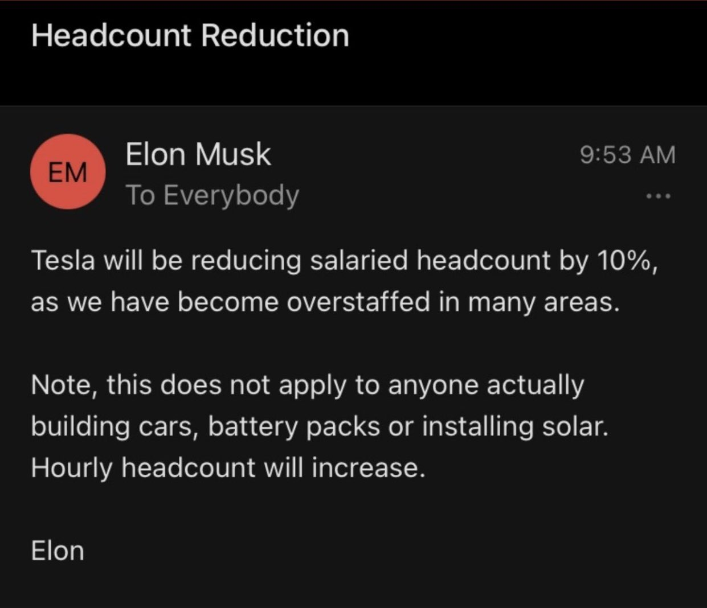

The new policy was shared in emails that were leaked to social media. Tesla did not respond to a request for comment on the messages, one of which appeared to be addressed to executives. People who are unwilling to abide by the new rules can "pretend to work somewhere else" Mr Musk said on Twitter, when asked about the policy. "Everyone at Tesla is required to spend a minimum of 40 hours in the office per week," he wrote in one of the emails. "If you don't show up, we will assume you have resigned."  The emails said staff should report to work at one of the company's main offices, "not a remote branch office unrelated to the job duties". Mr Musk added that he would personally review any requests for exemptions from the policy. Mr Musk said working in the office full-time was what the company asks of its factory employees and in-person collaboration was critical to the firm's success. "There are of course companies that don't require this, but when was the last time they shipped a great new product? It's been a while," he said in an email, one of two that was leaked and shared on social media. "Tesla has and will create and actually manufacture the most exciting and meaningful products of any company on Earth. This will not happen by phoning it in." Companies in many industries are wrestling with whether to allow the remote work practices that exploded during the coronavirus pandemic to continue. Some sectors, such as banking, signalled early on that they would expect staff to return to the office, while others, often in the tech industry, have said they will allow remote work indefinitely. Many places have opted for a mix. Office occupancy in the US is at about 43%, according to data from Kastle, which runs security card access systems at thousands of buildings across the country. 'I lived in the factory' Mr Musk is famously hard charging in his own attitude to work. He rarely takes holidays and during a crunch period for Tesla a few years ago, he slept on the factory floor. "The more senior you are, the more visible must be your presence," he wrote in one of the emails on the remote work policy. "That is why I lived in the factory so much - so that those on the line could see me working alongside them. If I had not done that, Tesla would long ago have gone bankrupt." Mr Musk was previously on the record as having a dim view of remote work, writing on Twitter earlier this year that "all the Covid stay-at-home stuff has tricked people into thinking that you don't actually need to work hard. Rude awakening inbound!" His comments raised the potential for a fresh clash of cultures with the staff at Twitter, which he is in the process of buying for $44bn (£35.3bn). In March, the firm's chief executive Parag Agrawal said staff could continue to work from home "forever". In a note to employees posted on the social media platform, Mr Agrawal said "As we open back up, our approach remains the same. Wherever you feel most productive and creative is where you will work and that includes working from home full-time forever." "Office every day? That works too. Some days in office, some days from home? Of course."